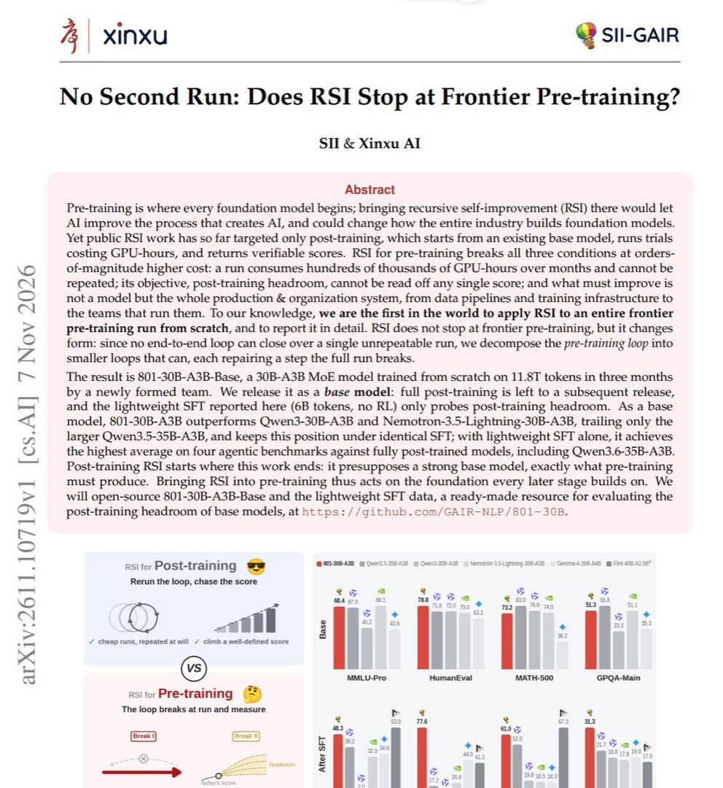
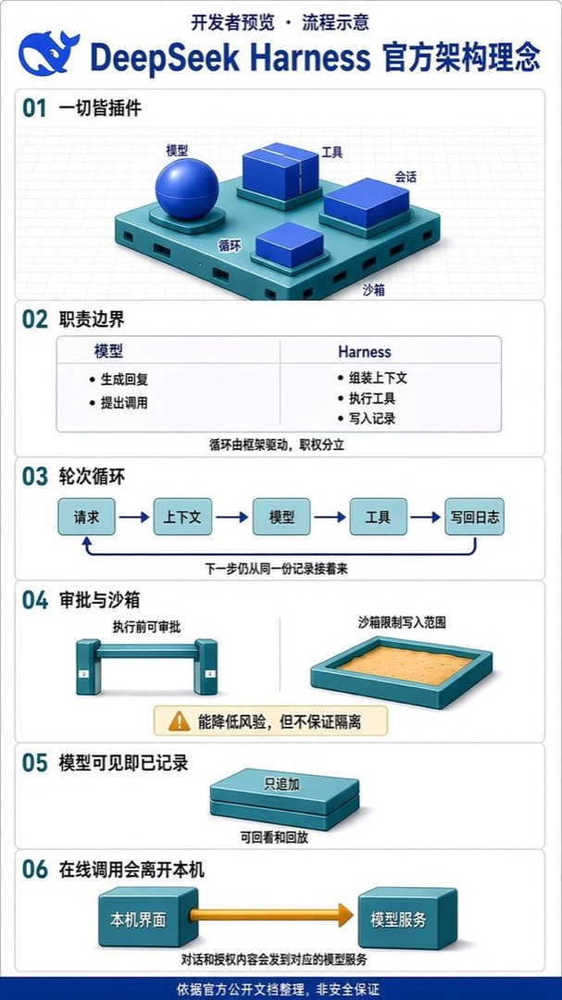
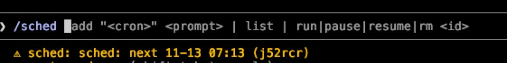
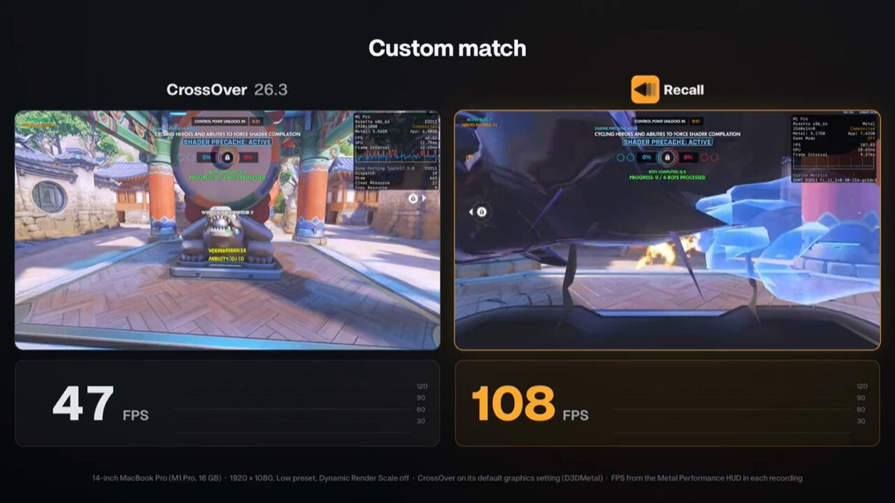

本期速览
02 RSI靠可验证小闭环做预训练
03 Google前端技能包通过率达88%
04 Cursor接入Gemini 4默认档变强
06 归藏Skill让AI做3D动作游戏
07 sched定时触发Claude干活
08 Recall让Mac本机跑守望先锋
01｜Karpathy开源六项目超30万星
来源（X） · @HeLi8866 · 2026-11-13 12:09
这位创始人把从训练 GPT、到让模型自己做研究的一整套材料，都开源在了 GitHub 上⬇️：
1. autoresearch · 近 10 万星
能自己连夜跑实验，只把有用的结果留下
https://github.com/karpathy/autoresearch
2. nanoGPT · 6.5 万星
从零开始训练一个自己的 GPT，很多人入门都是看这个仓库
https://github.com/karpathy/nanoGPT
3. nanochat · 6.0 万星
仓库简介里写的是，大约 100 美元就能自己搭一个 ChatGPT
https://github.com/karpathy/nanochat
4. llm wiki · 约 5,800 星
一份一页纸的想法，讲怎么让模型维护一份持续更新的个人知识库
https://gist.github.com/karpathy/442a6bf555914893e9891c11519de94f
5. llm.c · 3.1 万星
用 C 来训练语言模型，过程都摊开写
https://github.com/karpathy/llm.c
6. micrograd · 1.9 万星
几百行代码把神经网络怎么学习讲清楚
https://github.com/karpathy/micrograd
想上手的话，建议先从 micrograd 看起，啃上几天，这类模型里头是怎么转起来的，心里大概就有数了。
02｜RSI靠可验证小闭环做预训练
来源（X） · @Xudong07452910 · 2026-11-13 11:33
SII-GAIR 与 Xinxu AI 最近的论文《No Second Run》，尝试把 RSI 引入大模型预训练，并训练出了 801-30B-A3B。
核心思路是把昂贵的预训练过程拆成多个可验证的小闭环。
Agent 可以定位训练故障、评估数据和训练策略，并通过 Context Infrastructure 共享训练指标、代码变更和失败经验，让整个系统能够持续积累知识、改进流程。
作者报告，团队在三个月内完成了 11.8T Tokens 的预训练。在相同的 1T Token 预算下，22 项 Benchmark 平均分从 47.78 提升到 56.83。不过，这些收益来自多项联合改进，无法单独归因于 Agent。
这个工作对 RSI 和 Harness Engineering 还是很有启发。
当任务昂贵到无法反复重来，局部可验证的实验、长期积累的经验，以及跨任务共享的 Context，可能就是实现持续自我改进的关键。
📎 arXiv: https://arxiv.org/abs/2611.10719
💻 GitHub: https://github.com/GAIR-NLP/801-30B

03｜Google前端技能包通过率达88%
来源（X） · @don_tech1 · 2026-11-13 10:00
AI写前端默认还停在2019年，因为训练数据全是老屎山。
装个技能包直接拉满：通过 56%→88%。
一行命令搞定：npx modern-web-guidance@latest install
212个现代Web特性直接喂给Claude、Codex、Copilot。
仓库地址：https://github.com/GoogleChrome/modern-web-guidance
兄弟们，你们觉得下一个该被官方“喂饭”的屎山领域是啥？
04｜Cursor接入Gemini 4默认档变强
来源（X） · @zg0820 · 2026-11-13 13:15
这个数只在一个条件下有用：你每天在 Cursor 里写代码，而且用默认 effort。CursorBench 是 Cursor 自己的尺子，测的是模型在这个 harness、这套工具调用和上下文管理下的表现。换到别的 IDE，或者把 effort 拉满，排名可能变。
Artificial Analysis 同一天给的智能指数是 54，接近 Sonnet 5.5，成本约为它的 32%。两个数放在一起看才有意思：CursorBench 量的是「在 Cursor 里好不好用」，AA 量的是「模型本身多强、多贵」。前者决定你要不要切，后者决定你切过去之后账单会变成什么样。
已经在用 Cursor 的人，这个版本值得试，因为默认档就比以前强；不在 Cursor 里的人，别拿 54.3% 去推断它在 Claude Code 或 Codex 里的表现，harness 不同，分不可比。
05｜DeepSeek Harness架构拆解
来源（X） · @0xlangeai · 2026-11-13 12:29
模型负责生成内容、提出调用；Harness 负责组织上下文、执行工具、留下记录。
我把它的核心理念整理成了一张图：
一切皆插件：模型、工具、会话、循环、沙箱，都可以替换和扩展。
执行有记录：请求、上下文、模型、工具串成循环，会话日志只追加，方便回看和回放。
操作有边界：审批和沙箱约束执行范围，但不代表绝对安全。
还有一点别忽略：界面在本机，不等于数据不出本机。 使用在线模型时，相应内容仍会发往模型服务。
理解这套分工，再看 AI 怎么从「回答问题」走向「动手做事」，就清楚多了。👇

引用内容
蓝哥AI @0xlangeai
想上手 Deepseek Harness，也想从评论区找创作素材的，可以跟着做一遍👇 https://x.com/i/article/2120747381616717824
06｜归藏Skill让AI做3D动作游戏
来源（X） · @Ryrenz · 2026-11-13 12:05
guizang-game-skill 昨天才建仓，作者歸藏的 GitHub 主页写着“AI 工具与开源创作者，做 CodePilot”。附带的演示游戏《雾锁山门》，按作者的说法是 Fable 5.2 用了约 6 小时做出来的，烧了约 4.5 亿 token。
以前让 AI 写游戏，多半停在一个能动的方块：场景、角色、打击感、音效，每一样都得自己补，最后还拼不到一起。
这个 Skill 把流程拆成五段：调研规划、设定和素材、动作、手感和特效、声音和打包。《雾锁山门》就是按这套走出来的：仙侠俯视角，有小怪遭遇战和二阶段 Boss，三段连招、闪避、格挡、弹反、御剑、大招“万剑归宗”都有，还配了 8 条配音。最后打成一个约 33MB 的单 HTML 文件，手机、电脑和小程序容器里都能跑。
素材工具 Tripo、即梦、Suno 是可选的，没有也能用免费素材或程序生成顶上。
作者也说得很坦白：这套 Skill 目前只在一个项目上完整走通过，不保证成品质量；Skill 本身是 AGPL-3.0，演示游戏的内容版权归作者保留。
一个人加一个 AI，做一款能打 Boss 的游戏，门槛又低了一截。
GitHub：https://github.com/op7418/guizang-game-skill
07｜sched定时触发Claude干活
来源（X） · @yibie · 2026-11-13 12:04
它参考 Pi 上的 pi-schedule-prompt 插件设计，通过斜杠命令 /sched add 添加定时任务，时间格式有 Haiku 帮忙转换，不用自己手写 Cron 指令。
比如：
/sched add 每天早上 9 点 帮我看昨天的报错日志
到点它自动把 prompt 发给 Claude 去干活。
几个我觉得不错的特性：
✅ 关掉重开，任务还在
✅ 错过的时间，下次打开补跑一次
✅ 一次性任务也行：“明天下午 3 点 提醒我发版”
详情请看：
https://github.com/yibie/claude-sched

08｜Recall让Mac本机跑守望先锋
来源（X） · @GitHub_Daily · 2026-11-13 12:00
Recall 是一个专门让 Apple Silicon Mac 玩《守望先锋》的开源应用，打开后自动准备环境，登录战网、装好游戏就能开玩。
游戏直接在 Mac 本机运行，不用装 Windows，也不用买 CrossOver。能装到外置 SSD 上，外接显示器和超宽屏也支持。
GitHub：https://github.com/AsherJN/recall
作者拿 M1 Pro、16 GB 的 MacBook Pro 在同一自定义对局里对比，平均帧率从 CrossOver 的 58.4 提到 99.6。
鼠标输入也单独做了处理，配合 8000 Hz 鼠标，每秒能把最多 8000 次更新传给游戏，首次使用时需要允许输入监控。
安装包经过苹果公证，支持 M1 及以后的 Mac。只围着一款游戏把安装和操作手感做细，这种小而专的方向我挺喜欢。

09｜WorkBuddy让AI审计投研数据
来源（X） · @0xlangeai · 2026-11-13 12:00
方法是三关：哪来的、跟谁比、谁说的。过不了关的数字，不准进结论。
合成盘里有几个具体结果：
1. 单只权重大于 30% 才标注集中度。权重从 30.35% 降到 29.18% 后，预警撤了
2. 企业软件订阅 FY2024，年报原披露是 950，重列比较数是 1,000，总收入都是 2,900 百万港元。数没算错，只是把重列后的数放进 FY2024 列，表头没标「重列」
3. 应收涨了 46.15%，收入只涨 17.24%。结论是需要解释的偏离信号，不是已证实的问题。管理层说客户结算周期延长，只能单独放一栏，不能当成已核实事实
4 步提示词在评论区。这是合成演示，不是实盘。判断和决定，作者也说还得自己做。
https://x.com/AYi_AInotes/status/2121076851808280836
引用内容
AYi @AYi_AInotes
只要你平时看财报、管持仓，
以后做投研复盘可以直接拿这套人机协作当AI投研sop工作流：核心逻辑不是去让 AI 算命猜明天涨跌，而是把它当成冷酷的审计员，把每一笔数字背后的证据链彻底查清。
可能算过这笔账大家才知道这套体系有多重要：
平时看财报最怕的从来不是看错大趋势，
而是 AI 瞎编一个假数据，
或者把公司第二年重列的会计口径混着算，
你几万甚至几十万的实盘决策就当场踩雷；
而这套工作流把所有暗坑全部照亮，
亏了钱也能清清楚楚复盘！
我一直觉得AI 在投研里真正该干的就是最费人工的脏活累活。
我把它总结为给数字查户口，
每一笔数据都必须过三关：
→ 哪来的：出自年报哪一节，点开必须能追溯到原文
→ 跟谁比：跨期会计口径一不一样，能不能直接相减
→ 谁说的：是已经核实的事实，还是管理层自己的解释 户口查不清的数字，一个都不准进决策结论。
视频里是完整录屏（演示全部使用匿名合成数据），
整套实测分为极度干净的四步：
做持仓看板，没给成本坚决不瞎猜 丢入原始持仓和价格快照，按币种折算港币权重。遇到未录入成本的头寸，老老实实标出成本缺失，杜绝模型幻觉插值。
集中度动态风控 补录买入记录后自动重新折算市值。
单只持仓因加仓被稀释到 29.18% 时，
集中度预警自动撤销，调仓前后一目了然。
排查年报重列的口径陷阱 拆解业务分部增长，
遇到公司跨期重列口径时，
数字精准锚定在原始年报章节，
点开就能看到重列附注，避免假增量误导。
终极追问，三栏物理隔离 遇到应收账款异动，
强制要求它分三栏拆解：
已验证事实、公司自己的解释、还需人工核实的判断，把管理层画饼与客观事实彻底隔绝。
最后想跟大家说，投研工具从来不是水晶球，比亏钱更可怕的是没有按照自己的体系去亏，共勉！
4 步提示词原文与体验指引整理在评论区了，老规矩大家自取👇
10｜车辆Wi-Fi卸载数据省蜂窝容量
来源（X） · @TweetAECC · 2026-11-12 19:03
中文译文
如果车辆可以在加油/充电停靠站通过 Wi-Fi 卸载大型数据文件，从而为时间敏感的流量节省蜂窝网络容量，那会怎样？我们的最新概念验证（PoC）在日本测试了这种方法，在两分钟的停靠时间内传输了最多 2.1 GB 的数据。查看结果：https://bit.ly/4izA8cS
原文
What if vehicles could offload large data files over Wi-Fi at refueling stops, saving cellular capacity for time-sensitive traffic? Our new PoC tested this approach in Japan, transferring up to 2.1 GB in a two-minute stop. See the results: https://bit.ly/4izA8cS